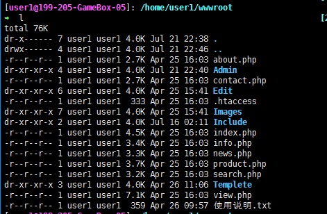
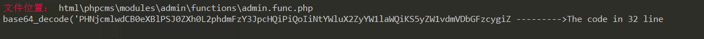
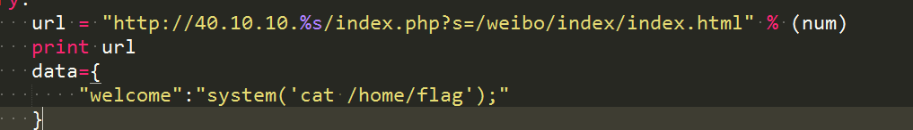

简要描述
入门安全的方式个人感觉还是从CTF来入手，详细的学习路线可以 知乎上搜索，这里不再累述。Web方面还可以从wooyun镜像来学习。自己也入坑了差不多两年了，大致的总结一下解题思路和自己的一些心态体会吧。
体会
当时是14年入的大学，大一打游戏度过，偶然的机会是15年大二，偶得一个学长带我参加了一下新大的安全比赛，当时的比赛水的不行，都不算是比赛吧，偶然听到了wooyun这个社区，之后就疯狂的百度浏览wooyun，获取WooYun账号，开始水群，就开始各种搜索怎么入门安全，怎么提升技能，听说了CTF，由于新疆的高校也没有CTF比赛，学校以往也是没有学长搞过，只能从网上获取，后面基本上是见到比赛就参加水群，浏览大佬们的博客，关注time-xctf，也是浮躁的不行，也参过一些线下的CTF比赛，基本上是被血虐，其中的收获也是不少的，至少让自己在安全的路上不再是孤独的人。这里就总结一下自己学到的一些套路，也算是为自己吧，毕竟曾经爱过。
套路考察
自己相对擅长WEB方面的一些题目，就总结WEB方面的套路，RE逆向的姿势可以参考tangKID小基友的总结。
基础类
使用Burp Suite 抓包基本上就能看到题目的提示和考察的知识点。
主要这类题目包括：
1.HTTP 头知识（User-Agent、XFF、referer、cookie、藏flag和自定义的一些header包括响应头）
2.URL知识 包括传参数、数组、字符、编码。
3.修改数据包绕过waf、防护或后缀名等。
汇总
引用P牛总结的题目汇总
一、爆破，包括md5、爆破随机数、验证码识别等
二、绕WAF，包括花式绕Mysql、绕文件读取关键词检测之类拦截
三、花式玩弄几个PHP特性，包括弱类型，strpos和===，反序列化+destruct、\0截断、iconv截断、各种协议流
四、密码题，包括hash长度扩展、异或、移位加密各种变形、32位随机数过小
五、各种找源码技巧，包括git、svn、xxx.php.swp、www.(zip|tar.gz|rar|7z)、xxx.php.bak、xxx.php~
六、文件上传，包括花式文件后缀 .php345 .inc .phtml .phpt .phps、各种文件内容检测<?php <? <%<script language=php>、花式解析漏洞、ffmpeg-avi-m3u-xbin
七、Mysql类型差异，包括和PHP弱类型类似的特性,0x、0b、1e之类，varchar和integer相互转换
八、open_basedir、disable_functions花式绕过技巧，包括dl、mail、imagick、bash漏洞、DirectoryIterator及各种二进制选手插足的方法
九、条件竞争，包括竞争删除前生成shell、竞争数据库无锁多扣钱
十、社工，包括花式查社工库、微博、QQ签名、whois
十一、windows特性，包括短文件名、IIS解析漏洞、NTFS文件系统通配符、::$DATA，冒号截断
十二、SSRF，包括花式探测端口，302跳转、花式协议利用、gophar直接取shell等
十三、XSS，各种浏览器auditor绕过、富文本过滤黑白名单绕过、flash xss、CSP绕过
十四、XXE，各种XML存在地方（rss/word/流媒体）、各种XXE利用方法（SSRF、文件读取）
十五、协议，花式IP伪造 X-Forwarded-For/Client-IP/X-Real-IP/CDN-Src-IP、花式改UA，花式藏FLAG、花式分析数据包
十六、逻辑错误（用户注册、已存在、长度）
十七、ssrf python-django-directory 比如直接127.0.0.1/../../etc/passwd
进阶类
我们知道了题目的意图，可能是几个点都需要满足或者有好几层再或者是题目的页面功能比较齐全亦或者是有什么黑科技，我们就需要分析、google。先大致分析整个题目的功能和参数，一般的思路是扫描备份文件关注最近爆发的漏洞事件，进行代码分析，这里就包含的知识点就比较多了，考察代码审计的功底了，需要提升代码功底，需要学习PHP基础、MVC设计思想、框架使用，这里的就不展开后面会更新PHP学习到实操的代码审计吧，慢慢积攒吧。
线下的一些总结
攻防模式一。沙盒模式
2016“丝绸之路”杯网络安全精英赛
这个算是自己比较正式的CTF线下的比赛了
题型 ：贴近实际的目标网站，隐含着花样的拓扑结构，有4个沙盒，各个沙盒可能有关联。
入手点：一。实际的网站一般会是通用的开源框架，需要掌握流行开源框架的利用的exploit。
快速的定位漏洞的位置。
一 未果的话，快速扫描目录，是否有信息泄漏，和铭感文件。然后就是定位到后台地址，猜用户名和密码，弱口令是关键。还有待扩思路。
进入后台之后的思路就是先getshell ，getshell 的思路就是后台的上传漏洞，一般是后台的编辑插件，比如fuck edit …绕过这些插件的过滤，再者是数据库备份，数据库命令执行等等。
提权: 这里如果是window提权首先如果是IIS+2003使用菜刀+pr 或者就是大马+15051exp
来提权。如果有防护，使用组建或者免杀等方法提权。
获取flag：搜索flag文件，一般是在管理员的桌面。
最后扩大战果：
快速的分析此网站所在的网络环境，是否与其他题有关联，是否还存在内网环境等。
信息收集的快速定位与扩大化。
这次比赛的总结：
开始2个小时的沙盒模式，沙盒1——192.168.199.101 提示don’tscan，没有任何 的思路。
沙盒2——102 是一个java的题很像线上的比赛题，这里不是很懂javaweb的参数问题就是没有后缀名的内部传参 比如102/order 显示信息 102/oreder/17 显示id为是17的信息，这里不熟悉参数的问题。(赛后才知道貌似是s2漏洞)
沙盒3——103 是一个家具站点，asp+iis+2003，从后台弱口令admim admin 进入之后就是上传一个图片马，然后数据库备份，getshell 菜刀连接 不能执行cmd，上传一个cmd 执行命令，不是system 权限，使用菜刀+cmd+pr 提权添加用户，3389连接之后搜索flag ，最后主办方的提示：沙盒3有沙盒1的入口信息，到第二天的直接放出了沙盒1的入口点，是一个菜刀，需要你re一下，检测一下这菜刀的行为，怎么执行的。只get一个flag，并没有做更大化的信息收集，和后续的拓扑扫描。（不足点:后台备份getshell不是很熟，提权也出了一些问题）
http://mycms7.cn.adminftp.com/ 沙盒3测试环境地址
沙盒4—eshop 一个开源的网店系统3.0版本，follow.php注入漏洞未能触发注入，这里也忘记测试后台是否有弱口令了，经验不足。
攻防模式二：web+pwn 服务器的组合。
环境说明 web服务 首先是一个/home/user1/wwwroot目录下有flag文件
Web目录权限是777 没有root权限 mysql 也是user1权限
Web 先说一下一开始的环境，php+mysql 权限都是 r_x权限 目录在/home/user1/wwwroot/ 一开始web 我们就掉了2次分。首先搜索连接数据库的配置文件，进入数据库，修改后台的默认密码，删除其他必要的用户。然后进入web 目录下，修改目录权限。然后就坐等了一天，竟然web 就再没有掉分，我也很奇怪，人品爆发了。
后来听到别人的思路就是一开始，上来，猜出了mysqlroot 的弱口令，udf 提权成功了(不是很清楚)，
直接就2000分到手，我很想和师傅们聊聊人生。细节有待实现。
正确的思路是：一开始可以先拼一波手速，破解默认的admin密码，直接去后台上传文件，先getshell 再说。实际是是说web至少有5个以上的漏洞，师傅们的思路是，注入到管理员的md5，进后台，上传文件 然后包含getshell。获取权限持续得分。
正常的策略是tar 打包web 目录的文件到/tmp 目录下然后 scp 下载下来，审计测试。
目录的权限如图

Wwwroot 权限是7 子目录文件是 r 权限
测试udf提权(赛后问了一下大家都没有root)
定制脚本优化一下
这里修补漏洞的方式：
系统防护
Netstat kill 进程
自动化脚本
暴力删除 敏感文件
首先备份网站目录， 后续的做diff命令比对，是否被写后门shel了没有l
首先我们写一个脚本
把我们防护的脚本包含到php文件中进行防护
然后可以写一个定时删除shell 文件的脚本，不允许在文件夹中写入文件
一：不知道漏洞首先包含php脚本到web文件中做url 参数获取日志后续在分析
二：包含waf.php文件做sql注入xss、srf等漏洞的通用防护(做全局变量的防护)
三：审计代码发现已知漏洞，做代码上的修补
四：做流量的混淆，防止被人流量重放。
五：包含自动删除shell脚本
六：总结的思路，首先我们可以抓取别人的流量 然后利用别人留下的密码什么
比如丝绸杯 我们当时发现我们的admin 表中被添加了用户
我们可以用他这用户登录别人的服务器后台，然后再上传shell 什么的
Web 防护加固实现
1.有root、administrator 权限的防护
首先环境是phpweb防护，首先直接修改php.ini 修改 设置为安全模式然后直接禁止大小马的函数，
disable_functions = passthru,exec,system,chroot,scandir,chgrp,chown,shell_exec,proc_open,proc_get_status,popen,ini_alter,ini_restore,dl,openlog,syslog,readlink,symlink,popepassthru,stream_socket_server
然后再开启安全模式
pcntl_exec() 可以绕过
http://security.ctocio.com.cn/tips/5/7764505_5.shtml
全部禁止
2.非root权限的防护
http://blog.csdn.net/andy1219111/article/details/9054277
打包web目录文件
下载保存扫描是否有内置后门
常规的修改默认的用户名和密码
- 首先去查看web目录下链接sql的配置文件，获取数据库的密码，然后登陆数据库修改网站的默认后台密码。是否有file权限
- 修改web目录下文件的权限，设置600，指定目录的权限设置400等，具体的文件具体设置，或者直接设置upload文件权限为chmod 000
- 写一个自动删除shell的php脚本，白名单，自动删除目录下多出来的php文件
Watch –n 1 rm –rf uploads 每1秒定时删除uploads 文件 - 加载防护waf safe 等php的脚本，抓取流量或者写脚本动态监控 脚本请参考<攻防脚本中的连接地址>
- 对特定的漏洞进行代码上的修改补上漏洞。
- 如果手速慢了被植入了内存马，一种是分析php-fmp进行进行查看，申请重启服务
另一种是，内存马判断文件，可以手动添加一个文件，内容可以随意了，只要存在此文件名的文件就可以了
7.如果主办方check的不严就直接删服务
8.赛后向主办方申请要自己服务的日志，一定要做赛后总结，日志分析
动态监控踩点防护 - 使用server.php 抓取 get,post,request等数据包
- Py实施md5 检测目录，是否有新增、改动、减少等文件
- 手动检测本地测试
具体办法：
首先，php文件内容头批量先导入抓数据包的php脚本和waf脚本
然后实施动态监控
这里功能可以预先集成在一个py 脚本中
具体方法和脚本在【加固脚本】文件夹中
漏洞查找 首先扫描web文件，是否含有主办方隐藏的后门 附脚本：查找后门木马

Opensns 这里就印证了主办方留有后门
直接

可以直接刷flag再一系列的防护之后，代码审计是否有包含 命令执行漏洞
- 确认有漏洞上传的shell到uoload文件
一般upload文件是777权限 所以我们可以
Watch –n 1 rm –rf upload 每隔1秒 删除upload文件 - 内存马的使用，第三届网络空间大赛中学习到使用内存马+手速的模式，然后使用批量的脚本，感觉很无解
- 加载防护日志，抓取流量或者从别人的服务上分析shell使用别人的shell进行批量
- 应对备份查找后门，我们可以上传一个具有上传功能的upload.php,再使用内存马来进行隐藏
- 高一点的赛事，可能网上难以搜索到现成的exp、poc这时就需要审计代码，一般持续的时间相对比较久。
附一下一些通用漏洞
列表
memcache未授权访问 java反序列(struts2可以细分) jenkis jenkis配置不当
心脏出血 nosql未授权 glashfish任意文件读 ms10-070 padding orcles jdwp调试漏洞 mogodb未授权 iis put解析漏洞 svn信息泄露 redis未授权 域传送 iis短文件名 ElasticSearch漏洞….. 后待续
一定好多动手复现，比赛的时候才能拼手速。
最后复现P牛的这个漏洞库
https://github.com/phith0n/vulhub/
线下的经验参考
http://mp.weixin.qq.com/s?__biz=MzIyNTA1NzAxOA==&mid=2650473772&idx=1&sn=383dd
http://5alt.me/posts/2014/10/AliCTF2014%E5%86%B3%E8%B5%9B%E8%AE%B0%E5%BD%95.html
这里猥琐的不死马和进程后门
https://blog.rexskz.info/index.php/2016-nationwide-ctf-final-writeup.html
http://rcoil.me/2017/06/CTF%E7%BA%BF%E4%B8%8B%E8%B5%9B%E6%80%BB%E7%BB%93/
线下的一些脚本上传到了github上了大家可以找一下

Powered by HyperComments